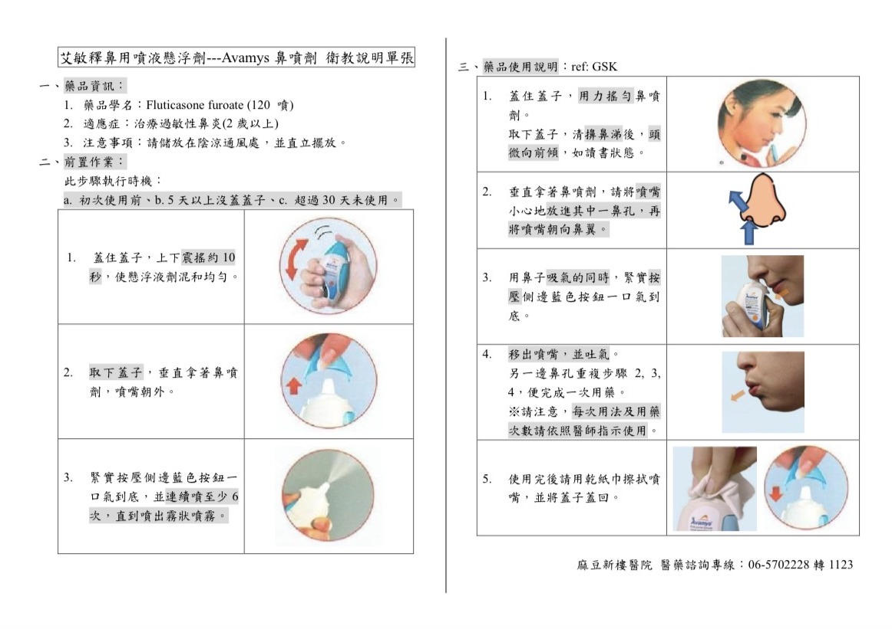
EXT-001
Avamys 艾敏釋鼻用噴液懸浮劑
學名 Fluticasone furoate，治療過敏性鼻炎（2 歲以上）。初次使用、5 天以上沒蓋蓋子、或超過 30 天未使用時，須先上下搖晃約 10 秒並連續噴至少 6 次至噴出霧狀噴霧；正式用藥時頭微向前傾，一鼻孔用藥時緊實按壓一口氣到底，兩側鼻孔各重複一次即完成。請儲放在陰涼通風處並直立擺放。
給病人與家屬看的衛教圖片與影片，也可以在諮詢櫃檯播放給同仁參考。點下方任一主題方塊查看完整內容，內容頁上方可點「返回」回到主題列表。
外用藥品（藥膏、貼片、噴劑等）的正確使用方式衛教圖卡。

學名 Fluticasone furoate，治療過敏性鼻炎（2 歲以上）。初次使用、5 天以上沒蓋蓋子、或超過 30 天未使用時，須先上下搖晃約 10 秒並連續噴至少 6 次至噴出霧狀噴霧；正式用藥時頭微向前傾，一鼻孔用藥時緊實按壓一口氣到底，兩側鼻孔各重複一次即完成。請儲放在陰涼通風處並直立擺放。
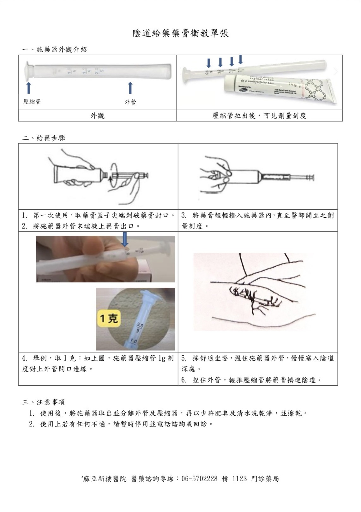
第一次使用先刺破藥膏封口並旋緊施藥器，將藥膏擠入施藥器至醫師開立的劑量刻度（例如取 1 克時，壓縮管 1g 刻度需對上外管開口邊緣），採舒適坐姿將外管慢慢塞入陰道深處，再推壓縮管將藥膏擠入。使用後將施藥器拆開以肥皂清水洗淨擦乾，若有不適請暫停使用並回診諮詢。
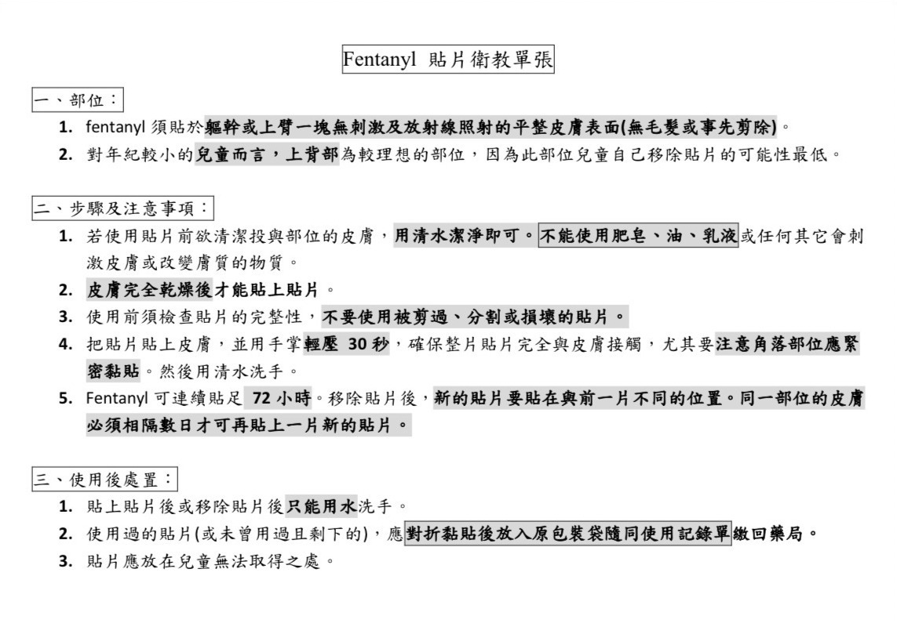
須貼於軀幹或上臂一塊無刺激、無放射線照射過的平整皮膚（無毛髮或事先剪除），兒童建議貼於上背部。清水潔淨皮膚並待完全乾燥後才能貼上，貼上後手掌輕壓 30 秒，尤其角落須緊密黏貼，接觸貼片前後只能用清水洗手。可連續貼足 72 小時，新貼片需換不同位置貼附。使用過或未使用完的貼片應對折黏貼放入原包裝袋，隨使用記錄單繳回藥局，並放置於兒童無法取得之處。
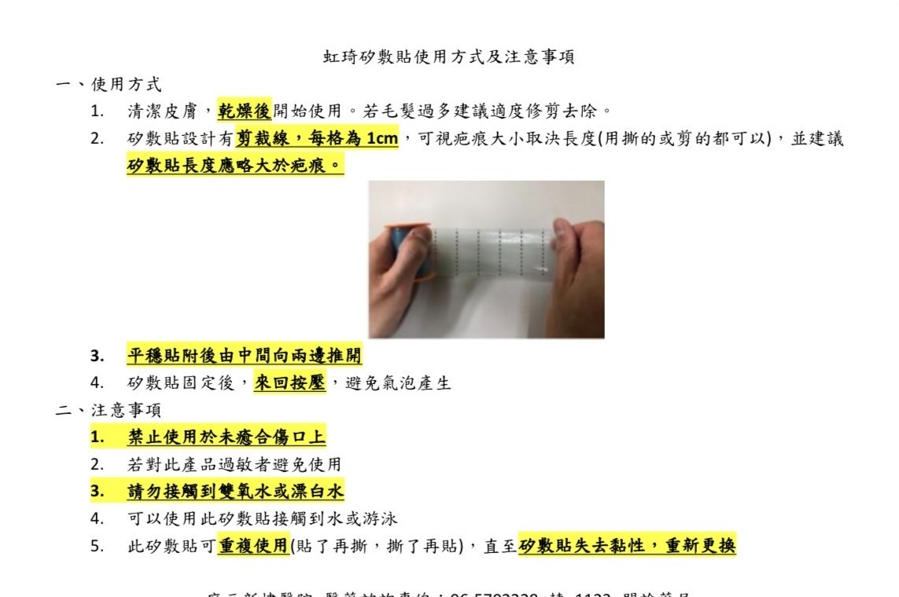
清潔皮膚待乾燥後使用，毛髮過多建議適度修剪；矽敷貼設計有剪裁線每格 1cm，長度建議略大於疤痕，平穩貼附後由中間向兩邊推開，固定後來回按壓避免產生氣泡。禁止使用於未癒合傷口上，若對此產品過敏請避免使用，並請勿接觸雙氧水或漂白水；可接觸水或游泳，貼了再撕、撕了再貼可重複使用，直到失去黏性再更換。
更多外用藥品衛教圖卡存放在雲端資料夾裡，點下方按鈕前往查看。
筆型胰島素的注射步驟、部位輪替與保存方式衛教圖卡。
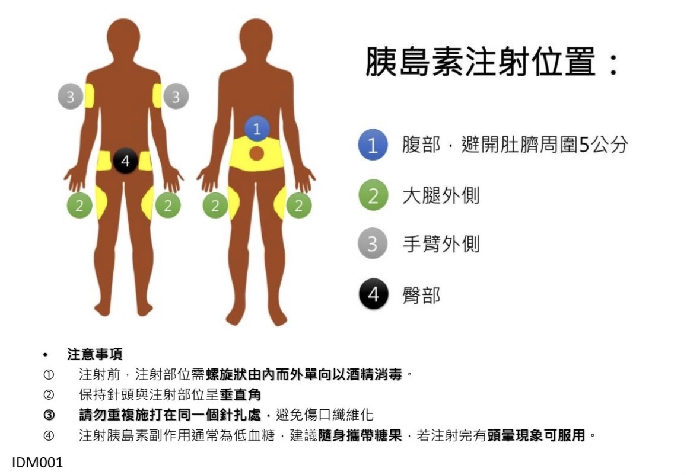
可注射部位：①腹部（避開肚臍周圍 5 公分）②大腿外側 ③手臂外側 ④臀部。注射前需以酒精由內而外螺旋狀單向消毒，針頭與皮膚呈垂直角，請勿重複施打同一針孔處以免纖維化。注射後若有頭暈（低血糖）現象可服用隨身攜帶的糖果。
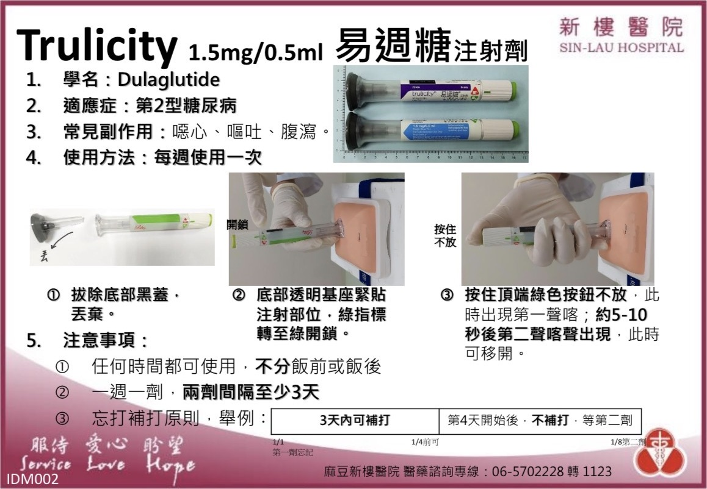
學名 Dulaglutide，常見副作用為噁心、嘔吐、腹瀉。每週使用一次，任何時間都可使用、不分飯前飯後；兩劑間隔至少 3 天。使用步驟：拔除底部黑蓋丟棄，底部透明基座緊貼注射部位並將綠指標轉至綠色開鎖，按住頂端綠色按鈕不放，聽到第一聲喀後約 5-10 秒等第二聲喀聲出現即可移開。忘打可於 3 天內補打，第 4 天後不補打、等下一劑即可。
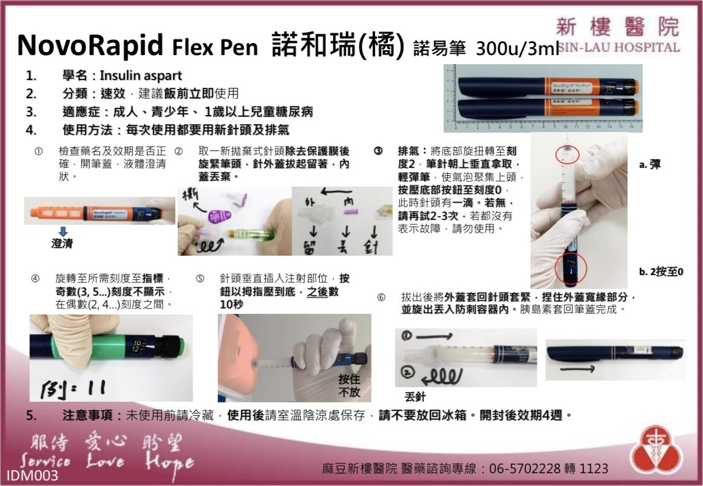
學名 Insulin aspart，速效型，建議飯前立即使用，適用成人、青少年、1 歲以上兒童糖尿病。每次使用都要換新針頭並排氣：旋緊新針頭、拔除外蓋內蓋丟棄，底部旋轉至刻度 2 排氣至出現一滴藥液，旋轉至所需刻度（奇數刻度不顯示，在偶數之間）後垂直插入注射部位，按鈕壓到底後停留數 10 秒再拔出，外蓋套回針頭並旋下丟入防刺容器。未使用前冷藏，使用後室溫陰涼處保存，開封效期 4 週，請勿放回冰箱。
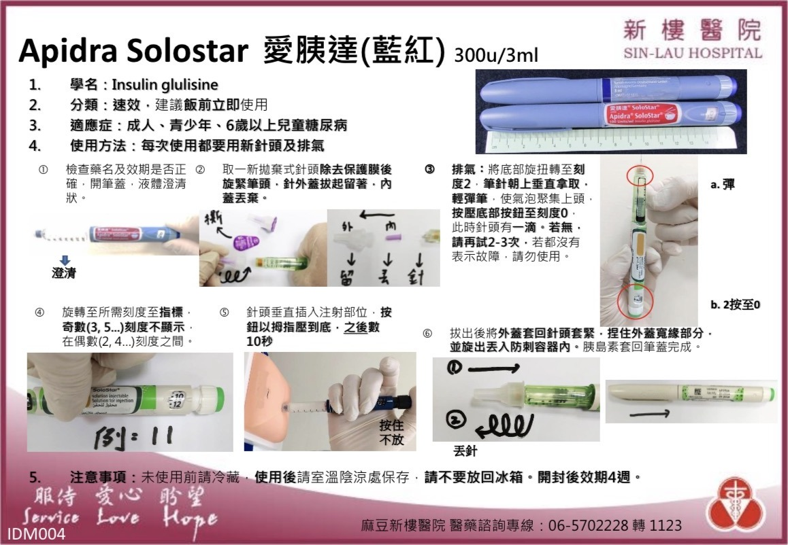
學名 Insulin glulisine，速效型，建議飯前立即使用，適用成人、青少年、6 歲以上兒童糖尿病。使用步驟與排氣、注射、丟針方式同其他拋棄式筆針：每次用新針頭及排氣，按鈕壓到底後停留 10 秒。未使用前冷藏，使用後室溫陰涼處保存，開封效期 4 週，請勿放回冰箱。
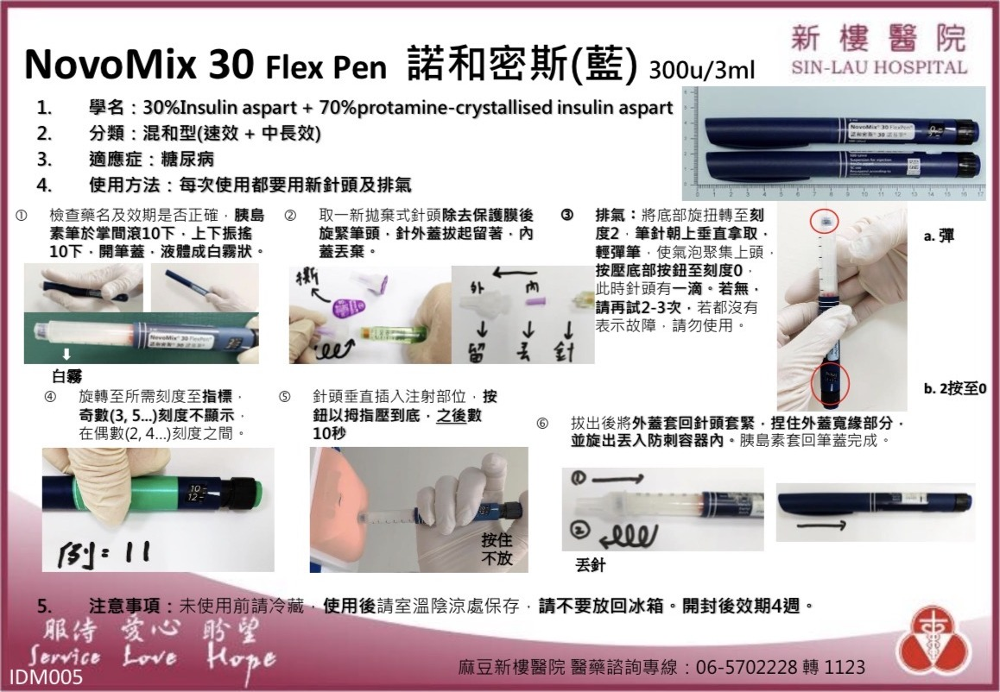
學名 30% Insulin aspart + 70% protamine-crystallised insulin aspart，混和型（速效＋中長效），適用糖尿病。使用前須將胰島素筆於掌間滾 10 下、上下振搖 10 下，開筆蓋確認液體成白霧狀再使用。每次使用都要換新針頭並排氣，按鈕壓到底後停留 10 秒。未使用前冷藏，使用後室溫陰涼處保存，開封效期 4 週，請勿放回冰箱。
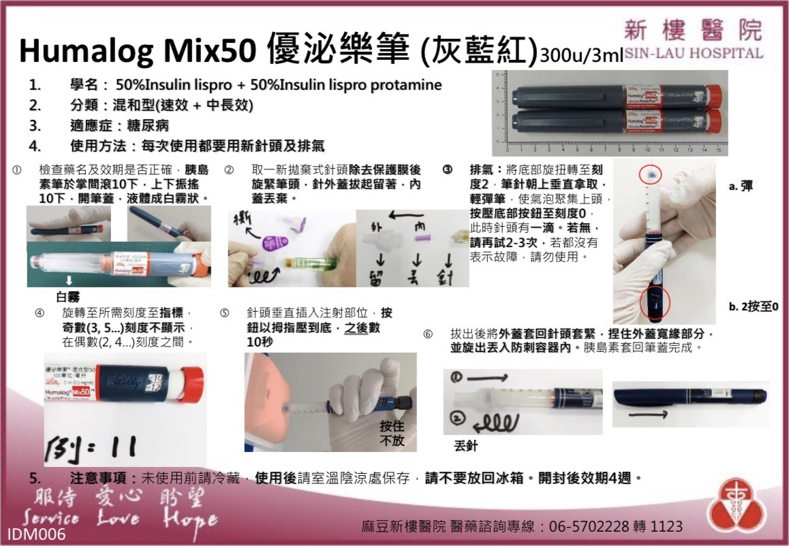
學名 50% Insulin lispro + 50% Insulin lispro protamine，混和型（速效＋中長效），適用糖尿病。使用前需將胰島素筆掌間滾 10 下、上下振搖 10 下，開筆蓋確認液體成白霧狀。每次使用都要換新針頭並排氣，按鈕壓到底後停留 10 秒。未使用前冷藏，使用後室溫陰涼處保存，開封效期 4 週，請勿放回冰箱。
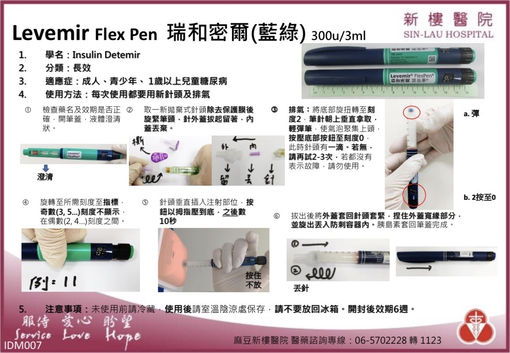
學名 Insulin Detemir，長效型，適用成人、青少年、1 歲以上兒童糖尿病。液體澄清狀，每次使用都要換新針頭並排氣，按鈕壓到底後停留 10 秒。未使用前冷藏，使用後室溫陰涼處保存，開封效期 6 週，請勿放回冰箱。
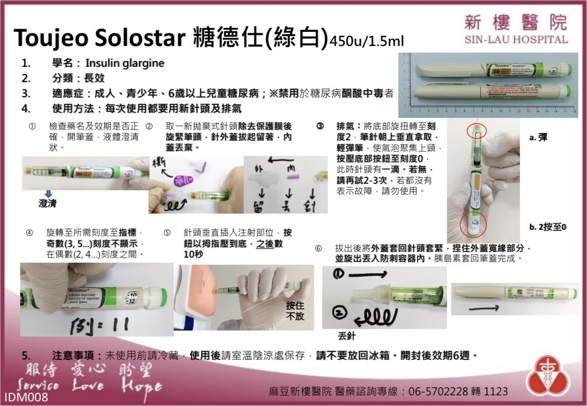
學名 Insulin glargine，長效型，適用成人、青少年、6 歲以上兒童糖尿病；禁用於糖尿病酮酸中毒者。液體澄清狀，每次使用都要換新針頭並排氣，按鈕壓到底後停留 10 秒。未使用前冷藏，使用後室溫陰涼處保存，請不要放回冰箱，開封效期 6 週。
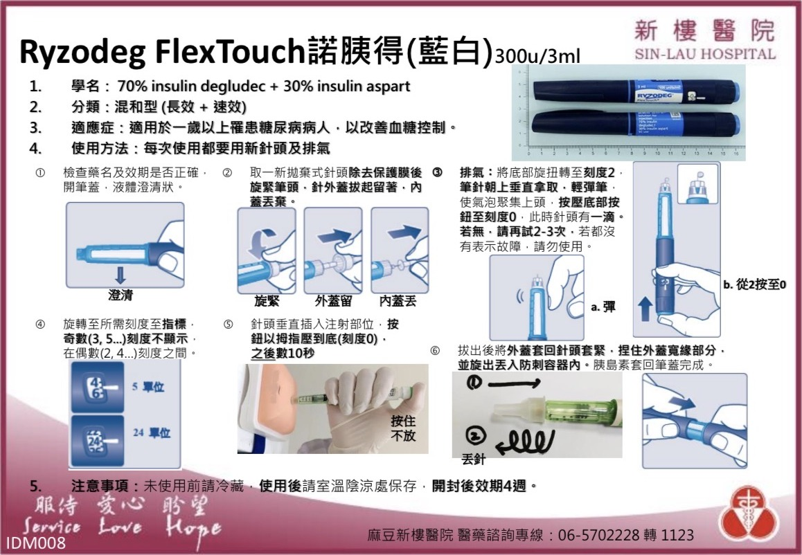
學名 70% insulin degludec + 30% insulin aspart，混和型（長效＋速效），適用於一歲以上罹患糖尿病病人以改善血糖控制。液體澄清狀，每次使用都要換新針頭並排氣，按鈕壓到底後停留 10 秒。未使用前請冷藏，使用後請室溫陰涼處保存，開封效期 4 週。
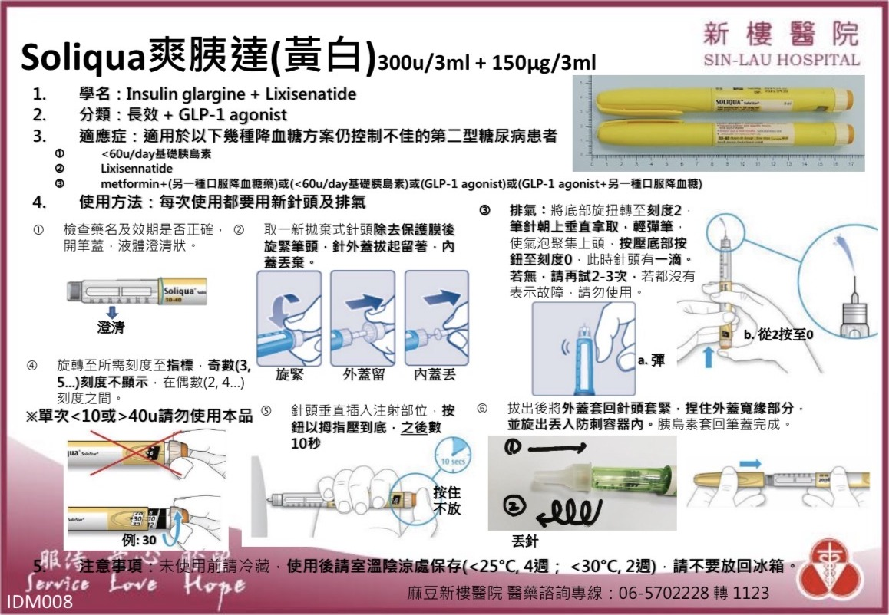
學名 Insulin glargine + Lixisenatide，適用於幾種降血糖方案仍控制不佳的第二型糖尿病患者。單次劑量須介於 10~40u 之間，超出範圍請勿使用本品。旋轉至所需刻度時，奇數刻度不顯示，在偶數刻度之間。每次使用都要換新針頭並排氣，按鈕壓到底後停留 10 秒。未使用前請冷藏，使用後室溫陰涼處保存（<25°C 4 週；<30°C 2 週），請不要放回冰箱。
更多筆型胰島素衛教圖卡存放在雲端資料夾裡，點下方按鈕前往查看。
COPD、氣喘等各類吸入劑正確使用步驟衛教圖卡，共 12 項藥品。

都保定量粉狀吸入劑正確使用四步驟：轉開瓶蓋、來回轉紅底上藥、對空吐氣、深吸閉氣 5 秒，使用完需漱口。
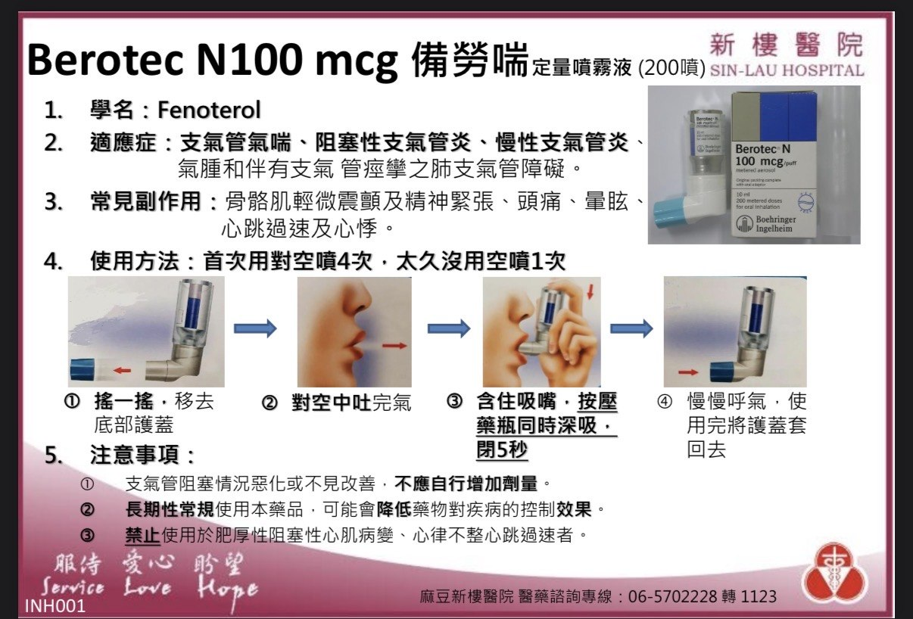
定量噴霧液，首次使用對空噴 4 次，太久沒用先空噴 1 次。使用步驟：搖一搖移去護蓋、對空吐氣、含住吸嘴按壓藥瓶同時深吸閉氣 5 秒、慢慢呼氣蓋回護蓋。
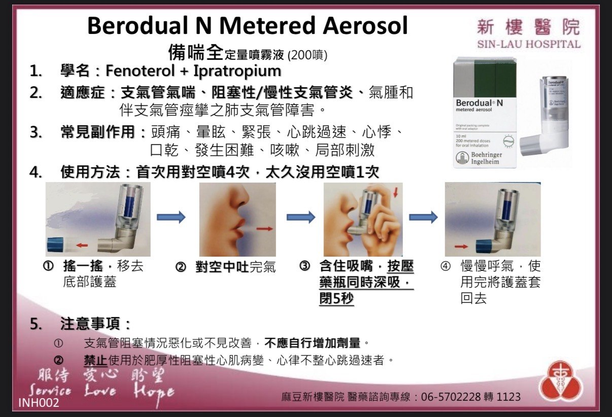
定量噴霧液，首次使用對空噴 4 次，太久沒用先空噴 1 次。使用步驟與備勞喘相同，支氣管阻塞未改善不可自行增加劑量，禁用於肥厚性阻塞性心肌病變、心律不整心跳過速者。
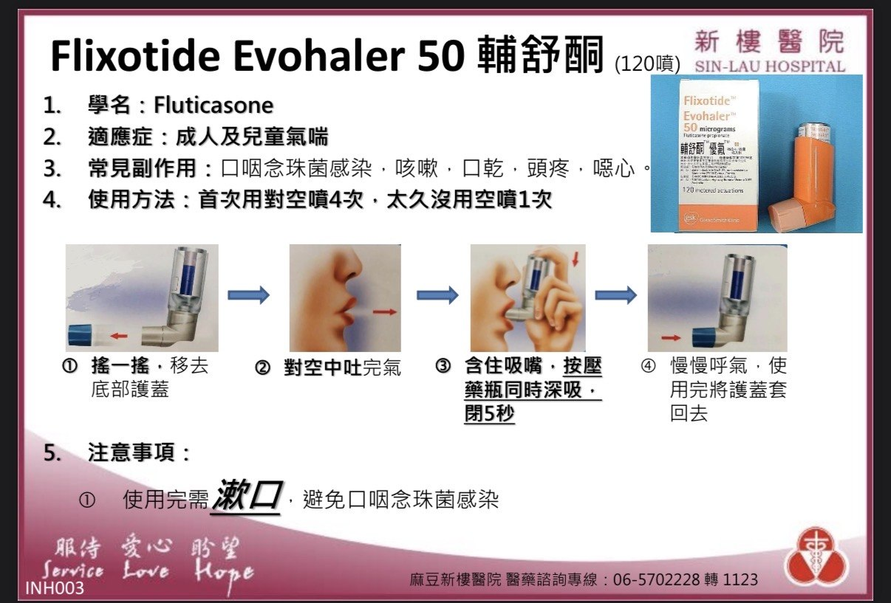
首次使用對空噴 4 次，太久沒用先空噴 1 次。使用完需漱口，避免口咽念珠菌感染。
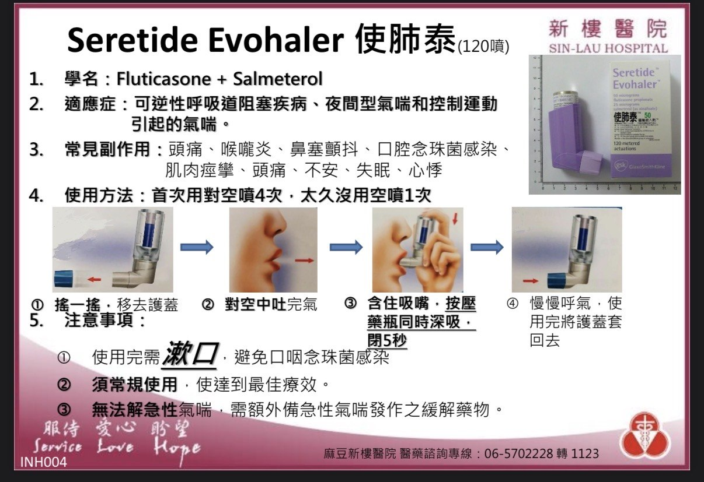
首次使用對空噴 4 次，太久沒用先空噴 1 次。須常規使用才能達到最佳療效，無法緩解急性發作，需另外備妥急性氣喘緩解藥物。
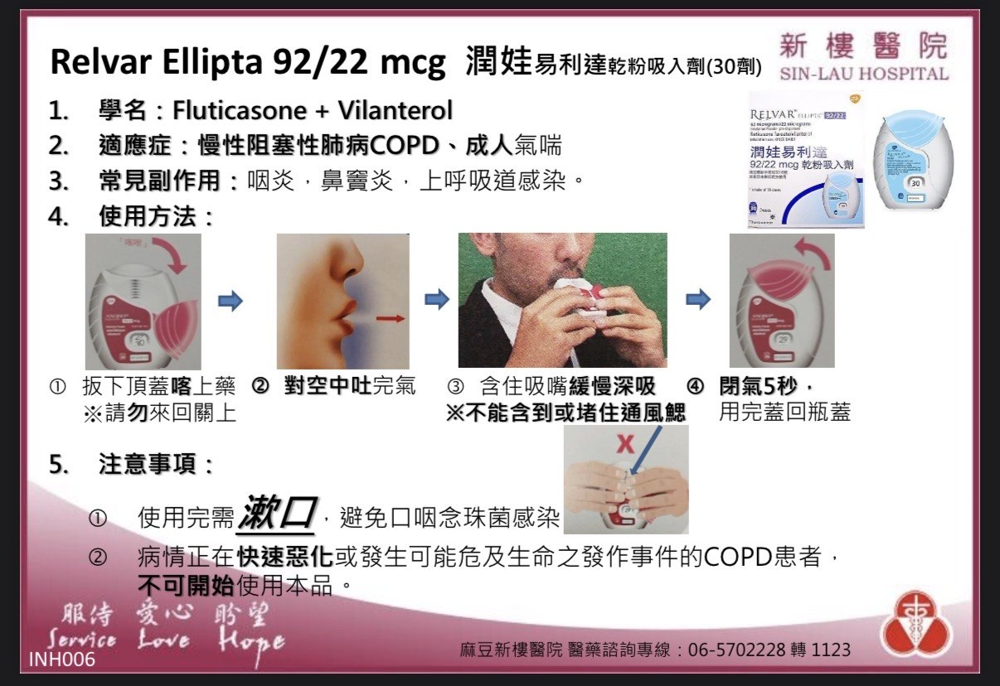
乾粉吸入劑，使用步驟：扳下頂蓋喀上藥（請勿來回關上）、對空中吐完氣、含住吸嘴緩慢深吸（不能含到或堵住通風孔）、閉氣 5 秒後蓋回瓶蓋。病情快速惡化或有生命危險發作事件者不可開始使用。
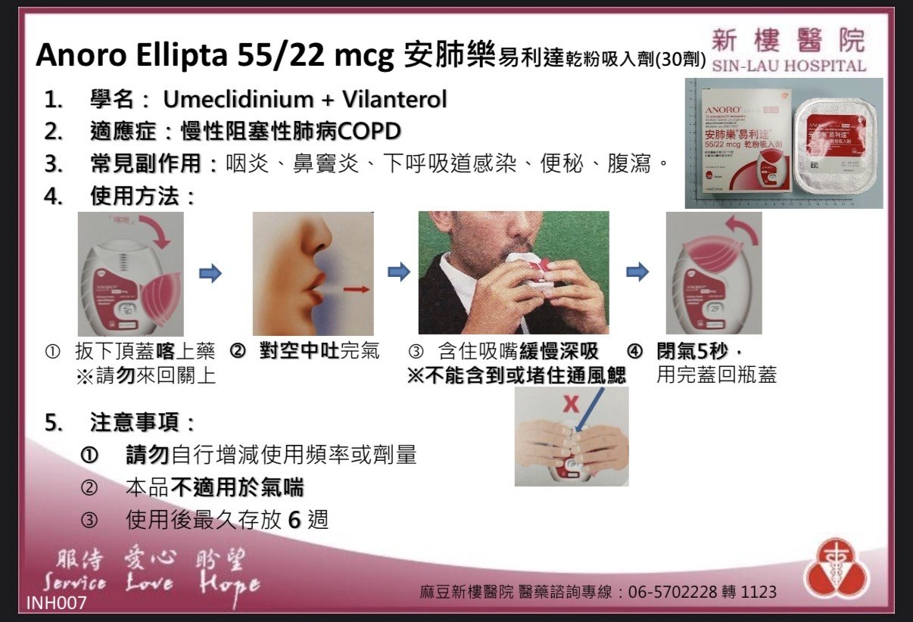
乾粉吸入劑，使用步驟同 Relvar。請勿自行增減使用頻率或劑量，本品不適用於氣喘，使用後最久可存放 6 週。
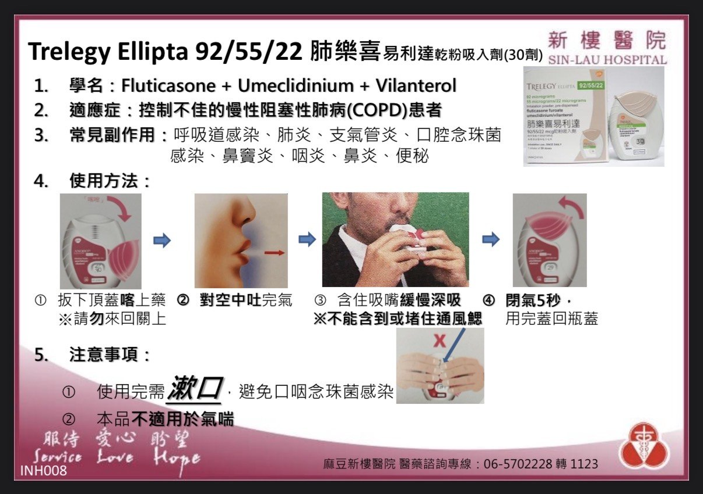
乾粉吸入劑，使用步驟同 Relvar。使用完需漱口避免口咽念珠菌感染，本品不適用於氣喘。
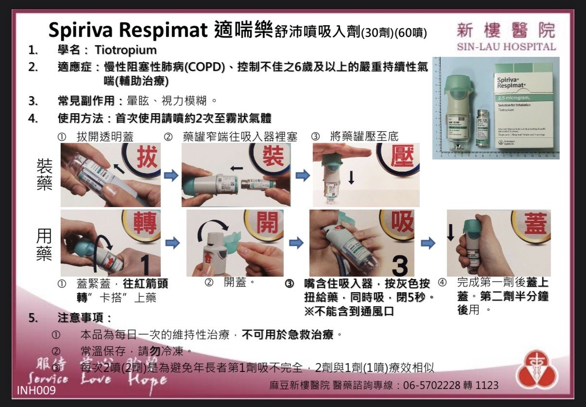
裝藥：拔開透明蓋、藥罐窄端往吸入器裡塞、壓至底。用藥：蓋緊蓋往紅箭頭轉上藥、開蓋、嘴含住吸入器按灰色按扭給藥同時吸閉氣 5 秒。每日一次維持性治療，不可用於急救，常溫保存請勿冷凍。
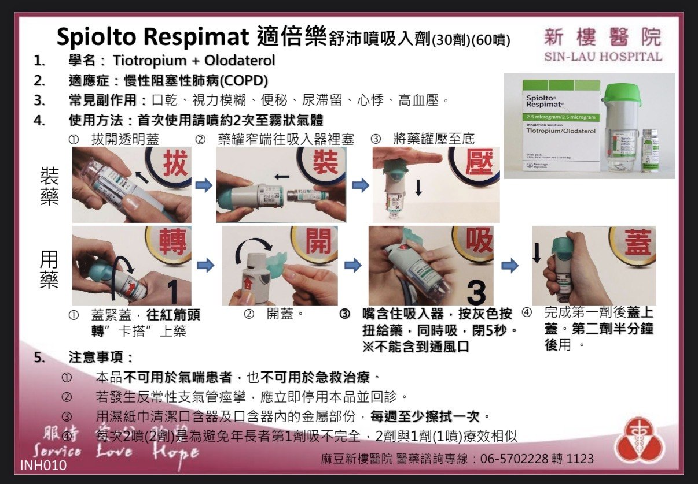
裝藥與用藥步驟同適喘樂。不可用於氣喘患者，也不可用於急救治療；口含器每週至少用濕紙巾擦拭一次金屬部份。
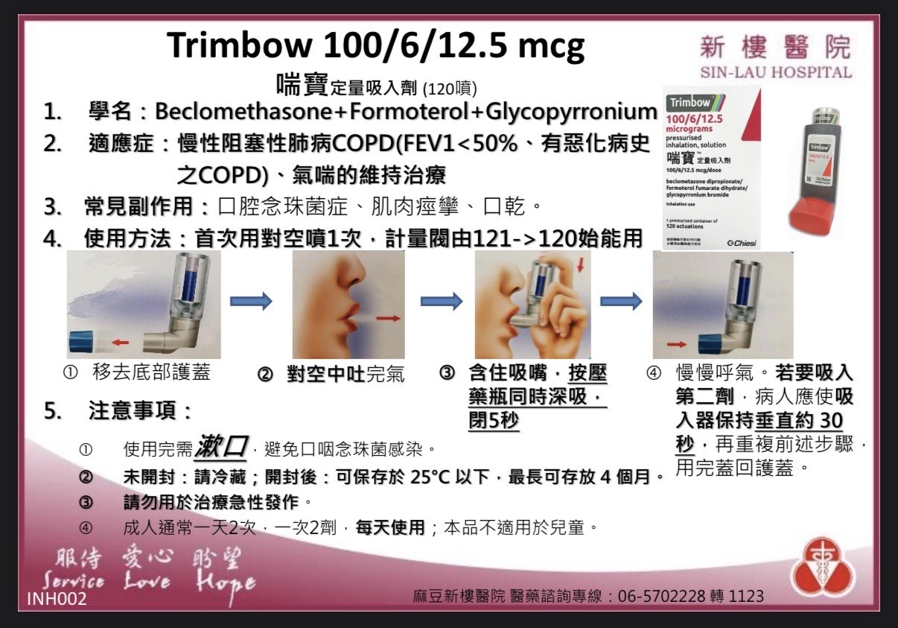
首次用對空噴 1 次，計量閥由 121 次減到 120 次才能開始使用。使用完需漱口，未開封請冷藏，開封後可保存於 25°C 以下最長 4 個月，本品不適用於兒童。
兒童劑量換算、餵藥方式與注意事項衛教圖卡。
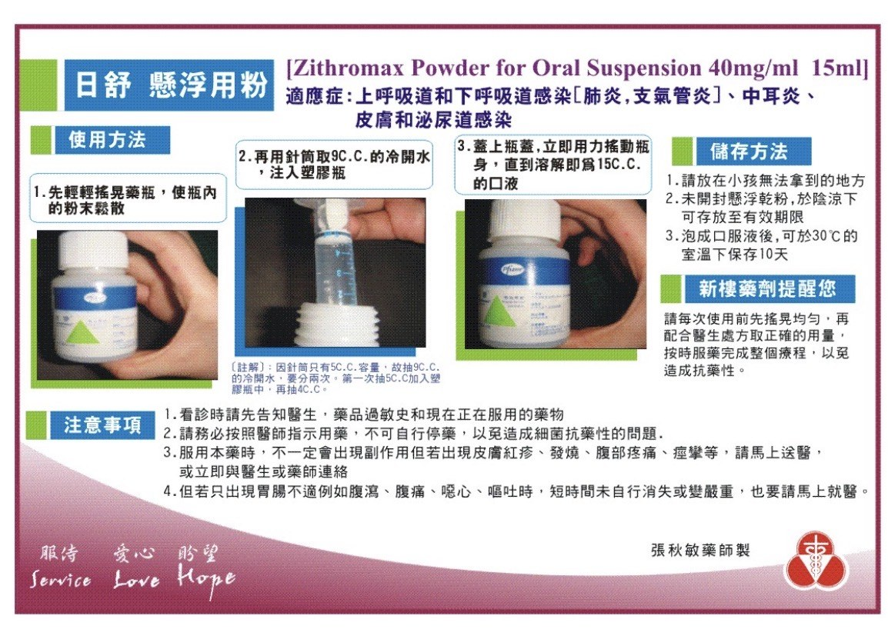
懸浮用粉泡製三步驟：搖鬆藥瓶粉末、用針筒取 9c.c. 冷開水分兩次注入、蓋上瓶蓋用力搖勻至溶解成 15c.c. 口液，並附儲存方式與用藥注意事項。
更多兒童用藥衛教圖卡存放在雲端資料夾裡，點下方按鈕前往查看。
常見口服藥品的服用方式、副作用與注意事項衛教圖卡。
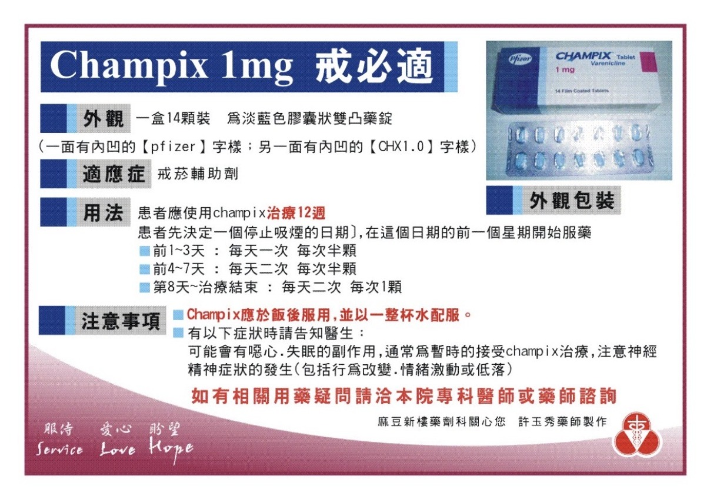
一盒 14 顆，淡藍色膠囊狀雙凸藥錠，戒菸輔助劑，需治療 12 週。用藥前先決定停止吸菸日期，於該日前一週開始服藥：前 1~3 天每天一次、每次半顆；前 4~7 天每天二次、每次半顆；第 8 天起至治療結束每天二次、每次一顆。應於飯後以一整杯水配服，可能有噁心、失眠副作用，若有行為改變、情緒激動或低落等精神症狀請告知醫生。
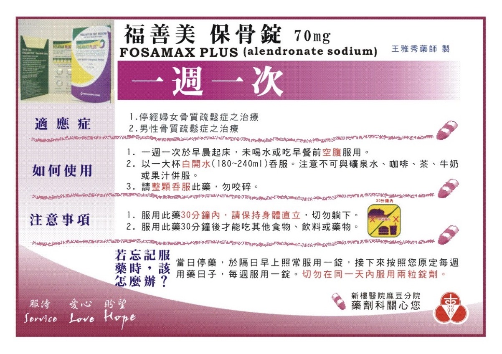
學名 Alendronate sodium，用於停經婦女與男性骨質疏鬆症治療，一週僅需服用一次。須於早晨起床、未喝水或吃早餐前空腹服用，以一大杯白開水（180~240ml）整顆吞服、勿咬碎，不可與礦泉水、咖啡、茶或牛奶併服。服藥後 30 分鐘內須保持身體直立、不可躺下，30 分鐘後才能進食其他食物、飲料或藥物。若忘記服藥，於隔日早上照常補服一錠，之後仍依原定服藥日服用，切勿同一天內服用兩顆。
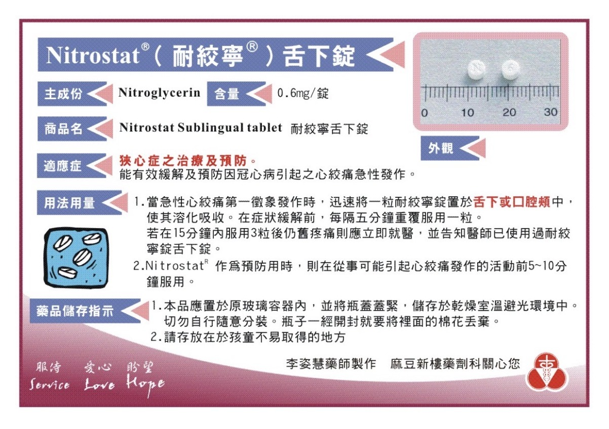
主成份 Nitroglycerin 0.6mg/錠，用於狹心症之治療及預防，能緩解及預防冠心病引起的心絞痛急性發作。急性心絞痛發作時迅速將一粒置於舌下或口腔頰中溶化吸收，症狀未緩解前每隔 5 分鐘可再服一粒，若 15 分鐘內服用 3 粒仍疼痛應立即就醫並告知醫師已使用過本藥。預防用時於可能引發心絞痛的活動前 5~10 分鐘服用。本品應存放於原玻璃容器內、瓶蓋蓋緊、置於乾燥室溫避光處，切勿自行分裝，開封後瓶內棉花須丟棄，並放在孩童不易取得之處。
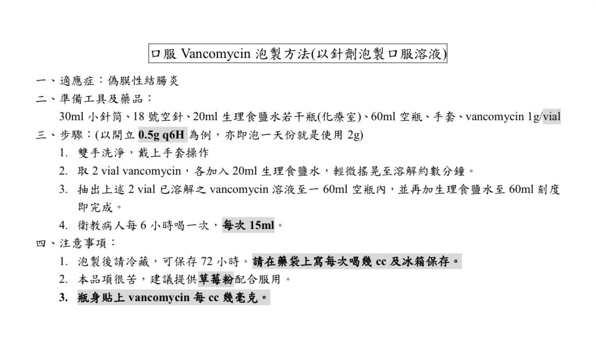
適應症為偽膜性結腸炎。以開立 0.5g q6H 為例（一天份共 2g）：取 2 瓶 vancomycin，各加入 20ml 生理食鹽水輕搖溶解，抽出至一個 60ml 空瓶內，再加生理食鹽水至 60ml 刻度即完成，衛教病人每 6 小時喝一次、每次 15ml。泡製後請冷藏，可保存 72 小時，請在藥袋上註明每次喝幾 cc 及冰箱保存；本品味苦，建議搭配草莓粉服用；瓶身請貼上 vancomycin 每 cc 含幾毫克的標示。
更多一般藥品衛教圖卡存放在雲端資料夾裡，點下方按鈕前往查看。
整體用藥安全觀念、常見用藥迷思與注意事項衛教圖卡。
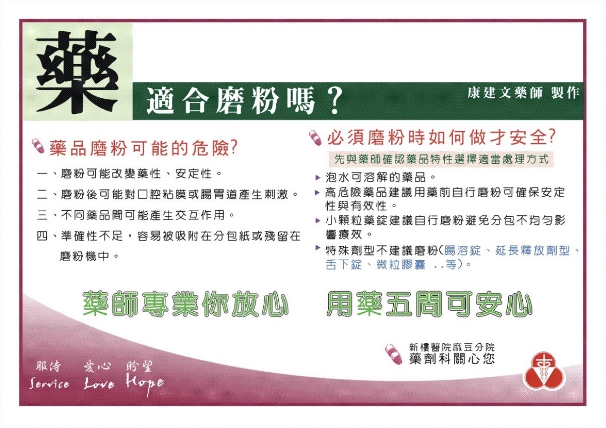
磨粉可能改變藥性與安定性、刺激口腔黏膜或腸胃道、造成藥品間交互作用，也容易吸附在分包紙或殘留在磨粉機中影響準確性。必須磨粉時請先與藥師確認藥品特性：泡水可溶解者可考慮泡水、高危險藥品建議用藥前才自行磨粉以確保安定性、小顆粒藥錠建議自行磨粉避免分包不均；腸溶錠、延長釋放劑型、舌下錠、微粒膠囊等特殊劑型則不建議磨粉。
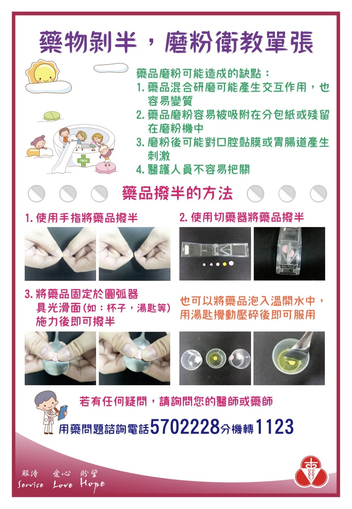
藥品磨粉可能造成混合研磨產生交互作用、容易變質、吸附在分包紙或殘留於磨粉機中、刺激口腔黏膜或胃腸道，且醫護人員不易把關。藥品撥半的方法：①用手指將藥品撥半 ②使用切藥器將藥品撥半 ③將藥品固定於圓弧光滑面（如杯子、湯匙）施力撥半；也可以將藥品泡入溫開水中，用湯匙攪動壓碎後再服用。若有任何疑問請詢問醫師或藥師。
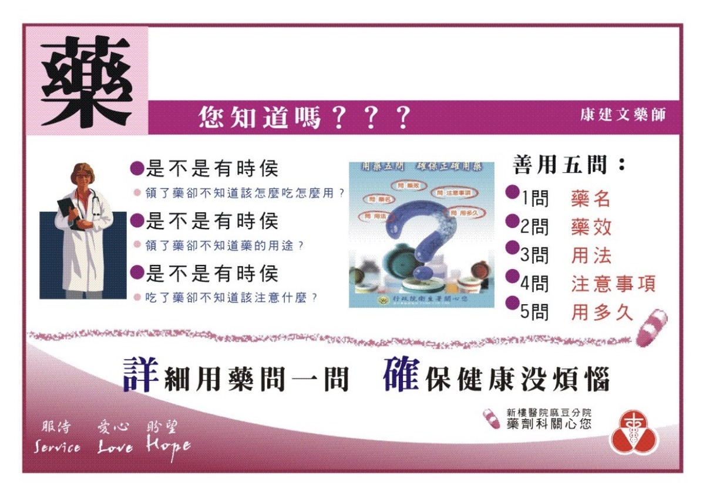
領了藥卻不知道該怎麼吃怎麼用、不知道藥的用途、不知道該注意什麼嗎？善用「用藥五問」：1 問藥名、2 問藥效、3 問用法、4 問注意事項、5 問用多久，詳細用藥問一問，確保健康沒煩惱。
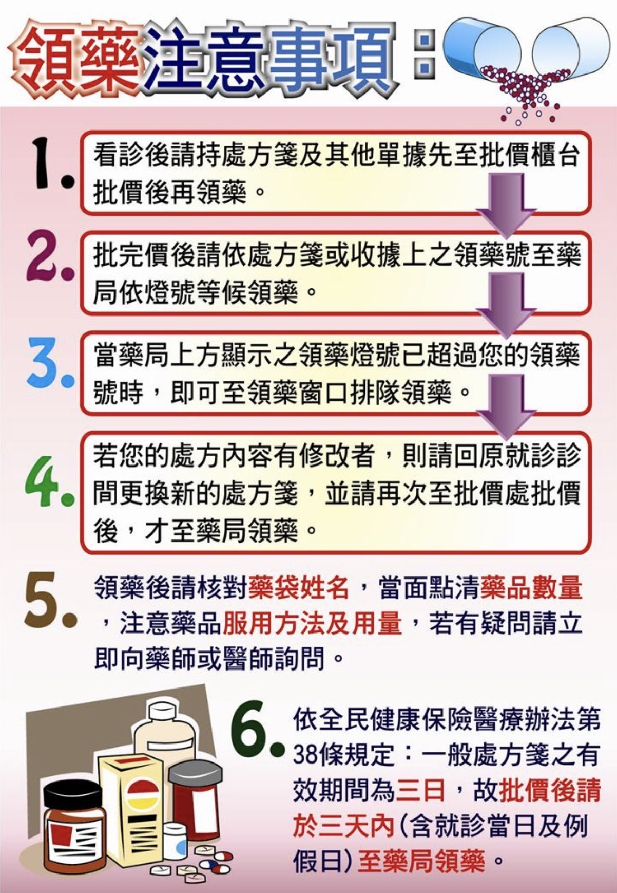
看診後請持處方箋及其他單據先至批價櫃台批價後再領藥，批完價依處方箋或收據上的領藥號至藥局依燈號等候，號碼超過時即可至領藥窗口排隊領藥；若處方內容有修改，須回原就診診間更換新處方箋並重新批價才能領藥。領藥後請核對藥袋姓名、當面點清藥品數量並注意服用方法及用量，若有疑問請立即向藥師或醫師詢問。依全民健康保險醫療辦法第 38 條規定，一般處方箋有效期間為三日，請於批價後三天內（含就診當日及例假日）至藥局領藥。
更多用藥須知衛教圖卡存放在雲端資料夾裡，點下方按鈕前往查看。
各類用藥衛教教學影片，可直接於資料夾中線上播放。
各類用藥衛教教學影片存放在雲端資料夾裡，點下方按鈕前往線上播放。